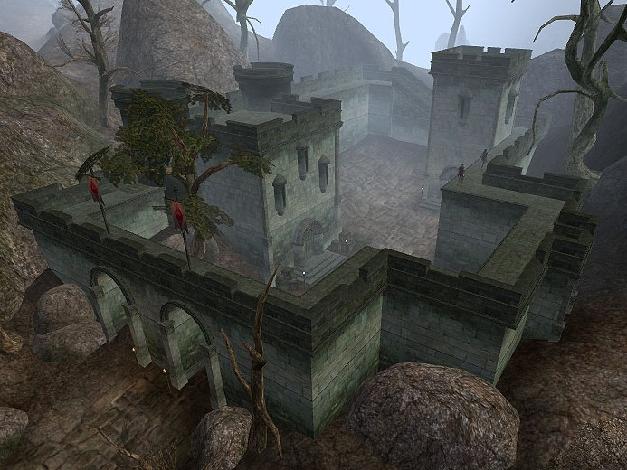

Morrowind:Moonmoth Legion fort
Morrowind: Places
| Moonmoth Legion fort |
| Alignment: Imperial |
| Region: West Gash |
|
Transport:
Almsivi Intervention:
Divine Intervention:
|
Services:
|
 |
|  Moonmoth Legion Fort |
Located southeast of Balmora, Moonmoth Legion Fort is the center for Imperial control in the region. The Fort offers an Imperial Cult Altar, apothecary, an enchanter, a smith and a trader. In the Prison Towers, Solea Nuccusius guards the jail and the Evidence chest for the region.
Notable Figures
Radd Hard-Heart is the Knight Protector and commander of the Fort. He acts as the source of most quests relating to the legion, but Larrius Varro, who seems to be an agent of the government, is having trouble with some bad people and will reward you for creating a bloodbath.
Getting There and Around
Moonmoth Legion Fort is quite close to Balmora, so you can use fast-travel options from there. The Silt Strider can take you to Ald-ruhn, Seyda Neen, Suran and Vivec. The Foyada Mamaea leads you east to Ghostgate and beyond.